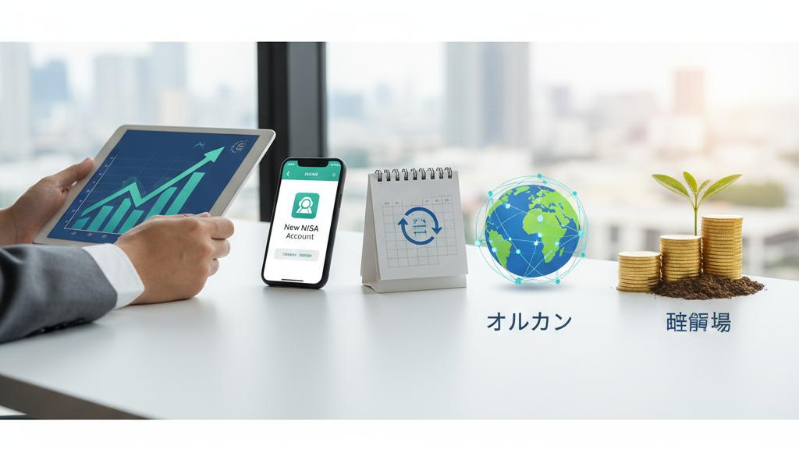

こんにちはりょうです。
「新NISAが良いのは分かったけど、
SBI証券ってどうやって始めるの？」「ネット証券って、
パソコンが苦手な自分にできるのかな…」——50代・60代の方から、
こんな相談をめちゃくちゃよくいただきます。
正直に言いますね。
スマホで写真を撮って送れる方なら、
SBI証券の口座開設はまったく問題なくできます。
むしろ難しいのは「手続き」じゃなくて、
「最初の一歩を踏み出す勇気」のほうなんです。
この記事では、
SBI証券で新NISAを始める流れを、
口座開設からオルカン
（全世界株式）の積立設定まで、
初心者の方が迷わないように順番に解説していきます。
読み終わるころには、
「あ、
これなら僕にもできそう」と思ってもらえるはずです。
まず最初に、
「そもそもなんでSBI証券なの？」という疑問にお答えしますね。
銀行の窓口で投資信託を買うこともできますが、
僕はおすすめしていません。
理由はシンプルで、
銀行で勧められる商品は手数料が高いものが多く、
ネット証券で買えるシンプルな商品のほうが、
長く持つほどコスト面で有利になりやすいからです。
その中でもSBI証券は、
ネット証券の中でも口座数が最大級で、
多くの人に選ばれている定番の一つです。
料理でたとえるなら、
品揃えが豊富で値段も良心的な
「大型スーパー」みたいなイメージですね。
- 新NISAで人気の
オルカン（全世界株式）などの低コストな
インデックスファンドが、
しっかり揃っている
- クレジットカード積立に対応していて、
ポイントが貯まる仕組みがある（還元率は
カードの種類や条件で変わるので、
最新は公式で確認してください）
- 口座開設も買付も、
すべてスマホやパソコンで完結する
「みんなが使っているから安心」というのは、
投資においてもけっこう大事な判断材料です。
困ったときに調べれば、
使い方の情報がいくらでも出てきますからね。
ここからは実際の手順です。
身構えなくて大丈夫ですよ。
だいたい「申し込み → 本人確認 → 完了通知を待つ」という3ステップで、
入力作業そのものは15分ほどで終わります。
手元に次の3つを用意してください。
これは旅行の前にパスポートと財布を準備するのと同じで、
先に揃えておくとスムーズです。
- マイナンバーカード（
または通知カード＋運転免許証など）
- 銀行口座（入金や出金に使う、
ご自身名義の口座）
- スマホまたはパソコン、
メールアドレス
SBI証券の公式サイトから「口座開設」に進み、
名前・住所などを入力していきます。
ここで大事なポイントが2つあります。
ひとつ目は、
申し込みの途中で
「NISA口座を申し込む（開設する）」という選択肢が出てくるので、
必ずそこにチェックを入れること。
これを忘れると、
後からまた手続きが必要になります。
ふたつ目は、
口座の種類を選ぶ場面で
「特定口座（源泉徴収あり）」を選んでおくと、
税金の計算や手続きを証券会社が代わりにやってくれるので、
確定申告の手間がぐっと減ります。
初心者の方には、
こちらが無難です。
スマホがあれば、
マイナンバーカードと自分の顔を撮影する
「オンライン本人確認」が使えて、
これが一番早いです。
郵送でのやり取りが不要になります。
申し込みが終わると、
審査を経て口座開設の完了通知が届きます。
なお、
NISA口座は税務署の確認が入るため、
取引できるようになるまで少し時間がかかる場合があります。
通知に従ってログインの初期設定をすれば、
準備完了です。

口座ができたら、
いよいよ本番です。
といっても、
ここが一番カンタンかもしれません。
「一度設定すれば、
あとは毎月自動で買い続けてくれる」のが積立のいいところなんです。
僕が投資初心者の方にいつもお伝えしているのは、
「迷ったら、
まずはオルカン（全世界株式インデックス）」ということ。
世界中の会社にまとめて分散投資できるので、
特定の国や会社の値動きに一喜一憂しなくて済みます。
世界経済というチーム全体に乗っかるイメージですね。
ログイン後、
投信（投資信託）の購入画面から、
全世界株式（オルカン）の低コストな
インデックスファンドを探します。
「eMAXIS Slim 全世界株式（オール・カントリー）」のような、
信託報酬（保有コスト）が低い定番の
インデックスファンドが候補になります。
購入方法は「つみたて(積立)」を選び、
必ず「NISA（つみたて投資枠）」を指定してください。
ここを通常の課税口座にしてしまうと、
せっかくの非課税メリットが活きません。
毎月の積立金額を入力します。
最初は「これくらいなら家計に響かないな」という無理のない金額で大丈夫です。
月1万円でも、
続けることに意味があります。
引落方法は、
クレジットカード積立にすると
ポイントが貯まるケースがあります。
ただし還元率や上限は変わりやすいので、
最新の条件は公式で確認してくださいね。
設定が終われば、
毎月決まった日に自動で買い付けてくれます。
値動きが気になって毎日チャートを見たくなるかもしれませんが、
長期の積立では、
むしろ見すぎないほうがうまくいくことが多いです。
ここは大事なところなので、
ひとつだけ。
すでにある程度まとまった資産をお持ちの50代・60代の方は、
すべてを株式にせず、
債券などを組み合わせて
リスクを抑えるのも賢い選択です。
若い世代は時間を味方にできますが、
退職が近い世代は「大きく増やす」より
「減らさず守りながら増やす」が基本方針になります。
ご自身の資産額や退職までの年数に合わせて、
株式と債券のバランスを考えていきましょう。
A. スマホでの操作に慣れている方なら、
十分にできます。
画面の案内に沿って進めるだけですし、
分からなくなったら一度閉じて、
後から続きをやることもできます。
どうしても不安な方は、
ご家族に隣で見てもらいながら進めるのもいいですね。
A. オルカンのような低コストの
インデックスファンドなら、
保有コストはかなり低めに抑えられます。
ネット証券は買付時の手数料が無料の商品も多いです。
ただし具体的な数値は商品や時期で変わるので、
購入前に商品ページの
「信託報酬」を確認する習慣をつけてください。
A. いいえ、
月100円や1,000円といった少額からでも始められます。
大きな金額をいきなり入れる必要はありません。
まずは少額で「買う・見守る」感覚に慣れてから、
徐々に金額を増やしていくのが、
初心者の方には安心な進め方です。
A. 同じ全世界株式でも、
コストの低い商品を自分で選べる
ネット証券のほうが、
長期では有利になりやすいです。
銀行の窓口は便利な反面、
手数料が高めの商品を勧められることがあります。
シンプルで低コストな商品を選ぶ、
という軸さえ持っておけば失敗しにくいです。
最後に、
今日のポイントをおさらいしておきますね。
- SBI証券は品揃えが豊富で、
初心者向けの低コストな
インデックスファンドが揃っている定番のネット証券
- 口座開設は「申し込み → 本人確認 → 完了通知」の3ステップ。
申し込み時にNISA口座も同時に開設するのを忘れずに
- 積立は「つみたて投資枠」でオルカンを設定し、
無理のない金額で「ほったらかし」が基本
- 50代・60代は、
資産額に応じて債券も組み合わせ、
守りながら増やす意識を持つ
- 手数料やポイント還元など、
変わりやすい数値は必ず公式で最新を確認する
「経験」と「ある程度の資金力」は、
若い世代にはない、
50代・60代だからこその武器です。
それを活かさない手はありません。
今の銀行残高をどう運用すればいいのか、
自分の年齢だとどんな
バランスがいいのか——具体的に迷っている方は、
ぜひお金の専門家の視点を取り入れてみてください。
公式LINEでは、
個別のご相談も承っています。
一緒に、
手堅い一歩を踏み出していきましょう。